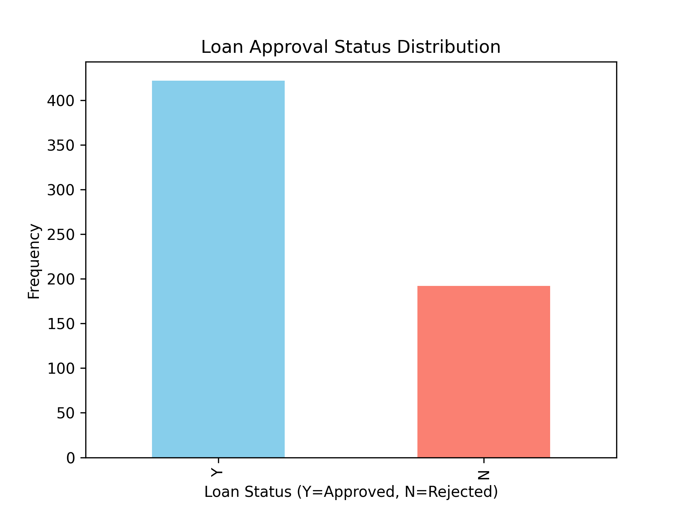
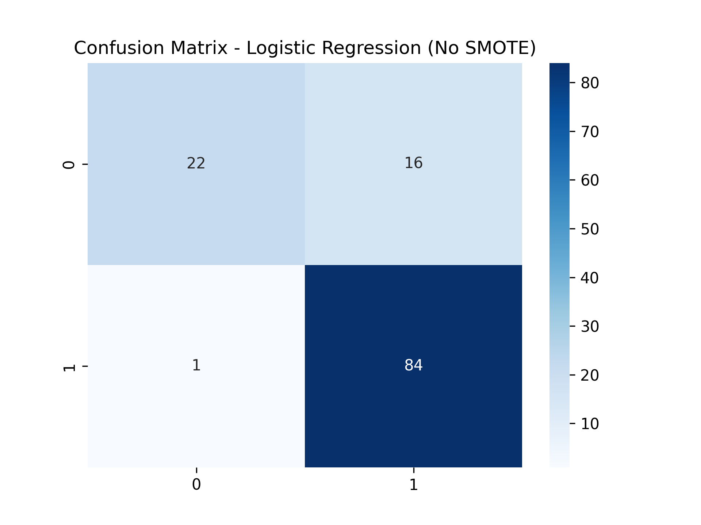
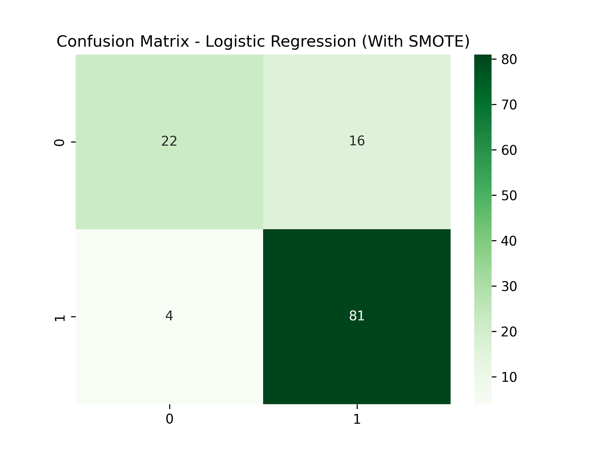
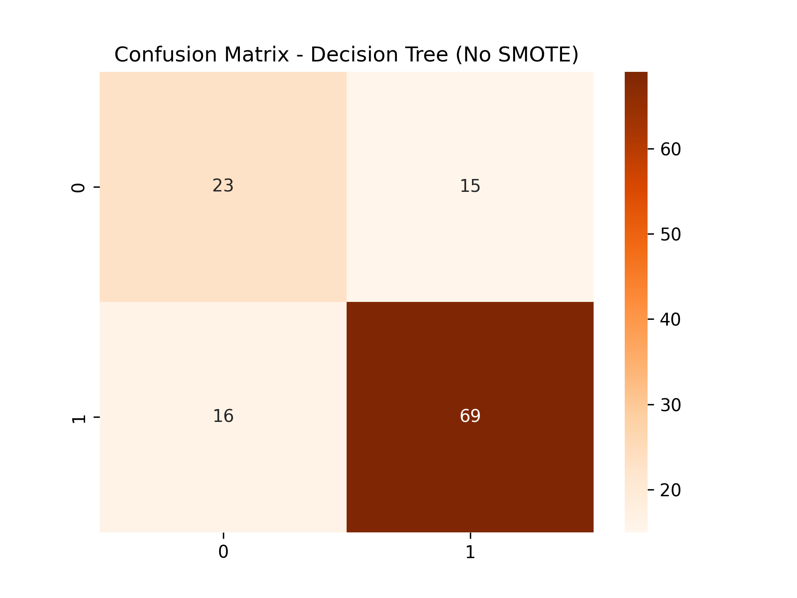
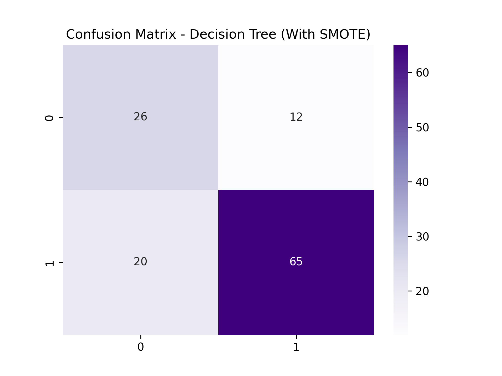
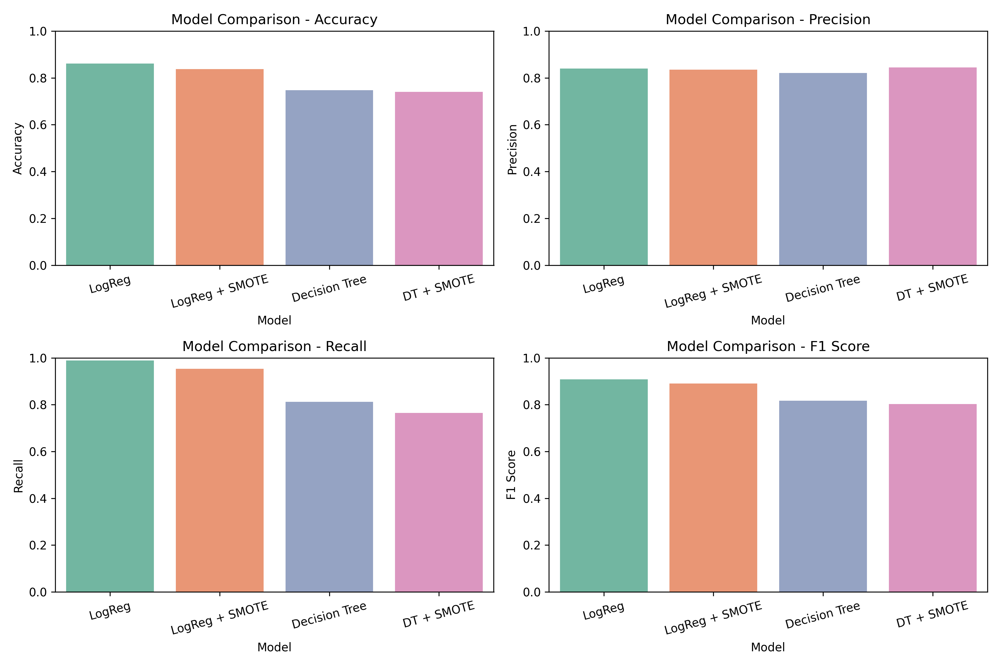

Problem Statement
The goal of this project is to predict loan approval status using machine learning techniques while handling imbalanced data. This helps banks make faster and more accurate lending decisions.
Dataset
The dataset contains information about applicants, including their income, credit history, and loan status.
- File:
loan_data.csv
- Features: Applicant details, Loan Status
Methodology
- Data Preprocessing: Handle missing values, encode categorical variables, scale numerical features.
- Exploratory Data Analysis: Visualize loan status distribution and categorical features.
- Model Training: Logistic Regression and Decision Tree Classifier, with and without SMOTE oversampling.
- Evaluation: Accuracy, Precision, Recall, F1 Score, and Confusion Matrices.
Results
- Logistic Regression (No SMOTE): Accuracy: 86.18%, Precision: 0.84, Recall: 0.988, F1: 0.908
- Decision Tree (No SMOTE): Accuracy: 74.79%, Precision: 0.821, Recall: 0.812, F1: 0.817
- Logistic Regression (With SMOTE): Accuracy: 83.74%, Precision: 0.835, Recall: 0.953, F1: 0.890
- Decision Tree (With SMOTE): Accuracy: 73.98%, Precision: 0.844, Recall: 0.765, F1: 0.803
Visualizations






Key Insights
- Logistic Regression consistently outperformed Decision Tree.
- SMOTE improved recall for both models but slightly reduced overall accuracy.
- Logistic Regression + SMOTE achieved the best balance between precision and recall.
Tools & Libraries
- Python
- Pandas, NumPy
- Matplotlib, Seaborn
- Scikit-learn
- imbalanced-learn (SMOTE)
How to Run
- Clone the repository:
git clone https://github.com/x3loox/Elevvo-Machine-Learning-Intern.git
- Install dependencies:
pip install -r requirements.txt
- Open the notebook:
jupyter notebook notebooks/loan_approval_prediction.ipynb